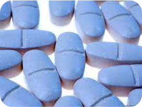

Nicotine
Nicotine is a naturally produced alkaloid in the nightshade family of plants (most predominantly in tobacco and Duboisia hopwood and is widely used recreationally as a stimulant and anxiolytic. As a pharmaceutical drug, it is used for smoking cessation to relieve withdrawal symptoms. Nicotine acts as a receptor agonist at most nicotinic acetylcholine receptors (nAChRs), except at two nicotinic receptor subunits (nAChRα9 and nAChRα10) where it acts as a receptor antagonist
BUY PRODUCT